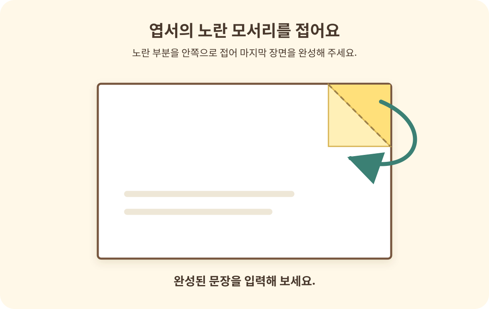

남은 시간30초
사서를 잡아라!
체력
화면 터치 · Space 점프공중에서 한 번 더!
마지막 이야기
1 / 5이제, 화면 밖에서 이어지는 이야기
마지막 장면은
너의 손끝에 있어.
엽서의 노란 모서리를 접어 두 친구의 마지막 장면을 완성해 줘! 완성된 문장을 입력해 봐.

가지고 있는 실제 종이 엽서를 접어 주세요.
마지막 페이지까지, 함께한 너에게
두 친구가
돌아왔어요!
두 친구는 원래의 모습으로 돌아왔어요.
비밀의 도서관 방탈출, 모든 모험을 마쳤습니다.
방탈출 최종 완료